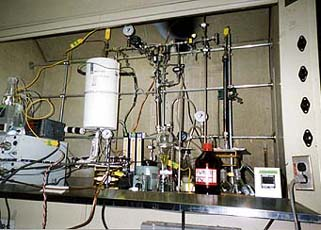

<< This is a diesel-fuel cracking system, set to run at some 300 psig and 400+ deg C. It turns the heavy hydrocarbons in diesel fuel into lighter ones.
The right image is a picture of a combined diesel-fuel treatment system, which not only cracks the hydrocarbons, but also cracks heavy organosulfur compounds and scrubs out sulfur-containing materials.